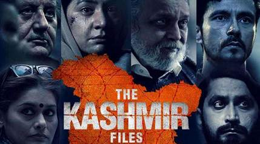

Kashmir Files
Unveils Untold Narratives: A Controversial Exploration of History
The much-anticipated film "Kashmir Files" has captivated audiences and sparked intense debates with its bold exploration of historical events and narratives surrounding the tumultuous region of Kashmir. Directed by [Director's Name], the film delves into complex socio-political issues, shedding light on perspectives that have long remained shrouded in controversy.
1. Provocative Storytelling
"Kashmir Files" weaves a narrative that delves into the intricate tapestry
of Kashmir's history, shedding light on a series of events and decisions
that have shaped the region's trajectory. The film's storytelling approach
is unapologetically thought-provoking, presenting an alternative perspective
that challenges established narratives.
2. Unearthing Unspoken Realities
The film's portrayal of real-life incidents and individuals aims to
highlight lesser-known aspects of the Kashmir conflict. By unearthing
unspoken realities and revisiting historical moments, "Kashmir Files" seeks
to initiate critical conversations and encourage viewers to question
preconceived notions.
3. Controversy and Criticism
"Kashmir Files" has not been without its share of controversy and criticism.
The film's portrayal of certain events has sparked debates about historical
accuracy, authenticity, and the responsibility of filmmakers to present a
balanced view of complex issues.
4. Societal Discourse
The release of "Kashmir Files" has ignited a broader societal discourse,
prompting discussions on freedom of expression, the role of cinema in
shaping public perception, and the importance of engaging with diverse
perspectives to foster a more comprehensive understanding of history.
5. Audience Reception
Audience reactions to "Kashmir Files" have been mixed, with some praising
the film's audacity to address contentious topics and challenge prevailing
narratives. Others have expressed concerns about the potential impact of
such narratives on social cohesion and national unity.
6. Historical Reckoning
While "Kashmir Files" presents a particular viewpoint, its release has
prompted calls for a broader historical reckoning and a more comprehensive
understanding of the complex dynamics that have shaped the Kashmir conflict.
7. Film as a Catalyst
"Kashmir Files" serves as a testament to the power of cinema to provoke
thought, inspire debate, and encourage a deeper exploration of historical
events. It underscores the role of art in fostering critical thinking and
contributing to the ongoing dialogue about the past, present, and future of
Kashmir.
In Conclusion
"Kashmir Files" emerges as a significant cinematic endeavor that pushes the
boundaries of storytelling and engages viewers in conversations that are
often uncomfortable but undeniably essential. As discussions surrounding the
film continue to unfold, it reinforces the notion that cinema has the
potential to be a catalyst for introspection, reexamination, and a more
nuanced understanding of complex historical narratives.
Reporting from Jaipur, I'm Prerana Arora for Jaipur News